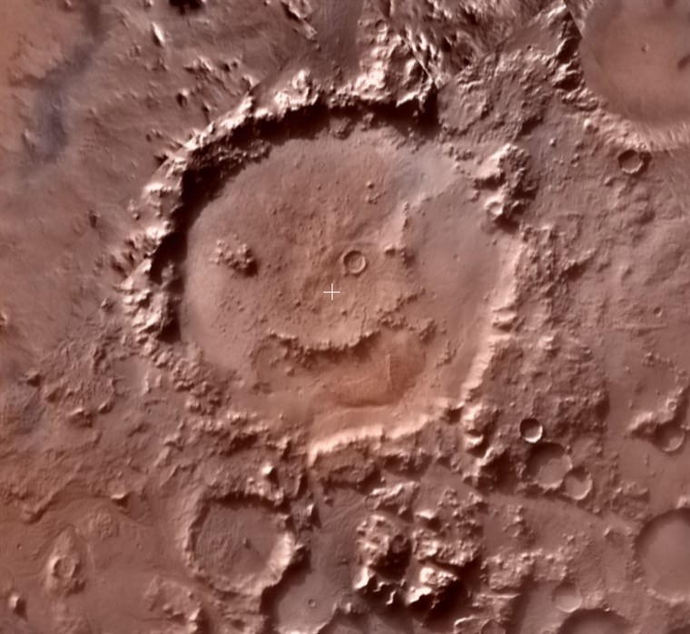

Mars
Created Friday 06 December 2019
@exogeology @mars @GEOLOGY @ESH @YEAR1
- Mars' surface is covered by a @regolith
- ~ Half ⌀ of Earth
- Day length 24hr 37m
Magnetism:
- Very weak @magnetic_field: 0.000003% of Earth
- Because Mars is a cold planet, the liquid iron core has frozen → the magnetic field is not still being generated.
- There is little @remanent_magnetisation left, and no magnetic field in the Amazonian (a much younger surface).
- The planet has been mostly reset.
Impacts:
@asteroids
The northen hemisphere is older and has more craters
When asteroids collide with ice, the impact melts the ice, and craters tend to look like 'muddy' splatters rather than craters

Plate extention at right angles to trench → High angle Grabens and Horsts
Processes:
Instant effects:
- Impact cratering
- Volacnic
- Tectonic
Gradational processes:
- Water
- Slopes (mass wasting) → slumping and planing
- Ice
- Wind → sand dunes
- Star Dunes
- Barchan Dunes
- Wind Streaks ≠ Tear drop islands
A Landform cutting over another means that it is younger @time
Topography:
- North is much flatter than the south → younger
- More craters in the south
- There may have once been an ocean spanning the entire northen hemisphere
- @Amazonian , @Noarchian and @Hieperia are time periods, not places.
Valles Marineris:
⬆️One of the biggest canyons in the solar system
Isostacy:
@isostacy
- Mars is not in isostatic equilibrium because it is a colder planet with a thick lithosphere → there is only one lithospheric plate and the lithosphere is too thick and rigid for @isostacy
- Evidence forpast thinner and hotter lithosphere:
- @Magnetic_Striping → sea floor spreading
- Strike slip transform faults.
Tear Drop Islands:
@Teardrop_islands are caused by water flowing around a crater rim
Shows that the crater rock was harder than the surrounding rock
Water:
- ⬆️These dendritic networks are evidence of @water in Mars' early history when the planet was warm enough for liquid water.
- They only appear on old Noachian terrain.
⬇️Mars also has fluvial channels
Glaciers:
- The northen ice cap is
- Southern hemisphere is only

- There is big seasonal variation in the sizes
Patterned Ground:
There is @patterned_ground on Mars, formed in exactly the same way as @stone_polygons on Earth.
Volacnoes:
Mars has two kinds of volacno: @Tharsis and @Patera
Tharsis ~ shield volacnoes:
@Olympus_Mons ~ the size of France at 22km high (Everest is 8.8)
It can get so big because Mars doesn't have any active @tectonics → the plate doesn't move → volacno just gets bigger over consecutive erruptions.
Patera:
Flanks are very eroded because the material is looser and ashier
All Patera are older than Mons because the @phreomagmatic erruptions with lots of ash need liquid water in the magma chamber..
Jökulhlaups:
@glaciers
Mars also has @Jökulhlaups
Happen when the ice in the @regolith meets hot magma which warms the material and causes catastrophic floods
Atmosphere:
Atmosphere is very thin
95%  3% Nitrogen
3% Nitrogen
Surface temperature ranges from -140 to + 20° C. There is no global warming because the atmosphere is to thin for a greenhouse effect.
Surface has low thermal inerta (heats up quickly in sunshine)
Wind/ Aeolian:
@Wind is the main process on Mars ≠ Earth where the main process is @water
@Saltation of sand and dust has 100x the kinetic energy than it does on earth → mass @erosion
Wind Streaks:
@Wind_Streaks are formed by the same mechanism as teardrop islands; craters deflect the incoming wind
Can be used for @measuring and mapping the wind direction
Dust Devils:
üéûÔ∏èhttps://youtu.be/k8lfJ0c7WQ8
@Dust_Devils are small short-lived dust storms caused by @insolation heating the ground and prompting convection
Mass Wasting:
Mars has huge @landslides which move at 360 km/hr over flat surfaces leading to three hypotheses:
→ Landslides happened when ice was present
→ Mechanical instability: landslide causes vibrations and collisions between the material and the valley floor → @convection causing denser rocks to falland smaller once to rise.